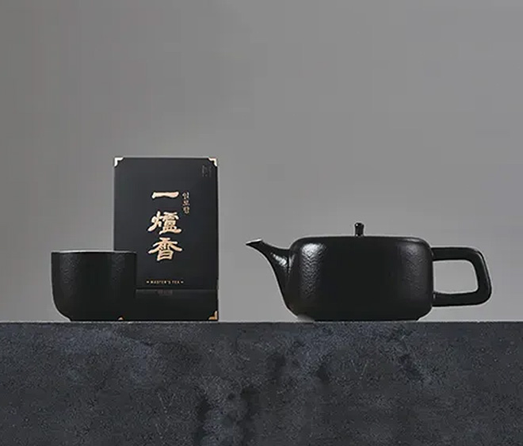
차가 만드는 더 나은 일상
제주의 자연이 전하는 깊은 이야기를
한잔의 차로 전합니다.
제주에서 시작된 차의 이야기
오설록은 제주의 자연과 사람, 그리고 시간이
빚어낸 차문화를 통해 일상에 깊은 영감을 전합니다.
오설록의 차가 틀별한 이유
돌과 바람이 전부였던 제주의 땅에서 시작해 최고의
차를 생산하기까지 오설록의 차가 특별한 이유를 만나보세요.
천연 필터 역할을 하는 화산 토양으로 더욱 깨끗한
제주 암반수는 차 나무가 건강하게 자라기 위한 더없이 좋은 자연의 선물입니다.
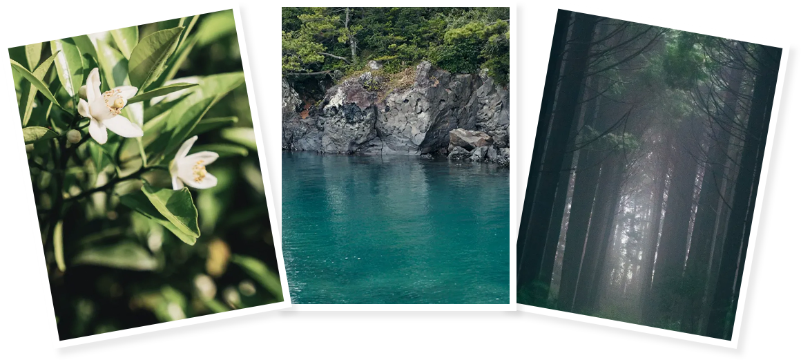
차를 향한 철할
오설록은 좋은 찰를 넘어 더 나은 내일을 생각합니다.
자연과 사람 지속 가능한 가치를 차 한잔에 담아 냅니다.
1 자연을 숨쉬게 하는 차받
오설록은 믿을 수 있는 품질의 차를 생산하기 위해 직접 차 나무를 재배하고 찻잎을 가공하여 차 제품을 고객에게 전달하기까지 전과저을 통합적으로 관리하고 있습니다.
2 그대로의 제주르 담은 차
제주의 겨울 바닷바람을 이기고 핀 제주 귤꽃 하얗게 수놓은 제주 자생종인 왕 벛꽃, 제주 한란 등 제주에 서식하는 꽃을 ‘헤드스페이스’기법을 통해 훼손없이 꽃향을 포집하여 향기 그대로 차에 담았습니다.
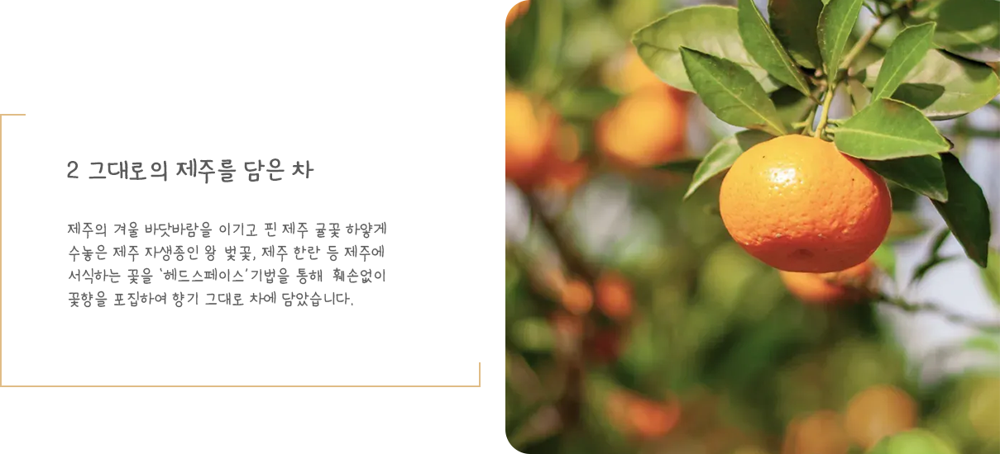
3 깊이를 찾는 발효의 기술
제주의 봄볕 아래 약발효한 섬세한 꽃향미, 따뜻한 제주 바람으로 발효한 건과일의 깊은 풍미 등 제주의 기후로 만들어진 특별한발효를 통해 오설록의 발효 명차는 만들어집니다.
4 기술이 만드는 내일의 차
오설록은 국내 단일 최대 규모의 연구소를 설립하여 차에 대한연구로 품질 뿐 아니라 미래차 산업의 발전을 위하여 유기 재배 기술 등을연구하고 있습니다.
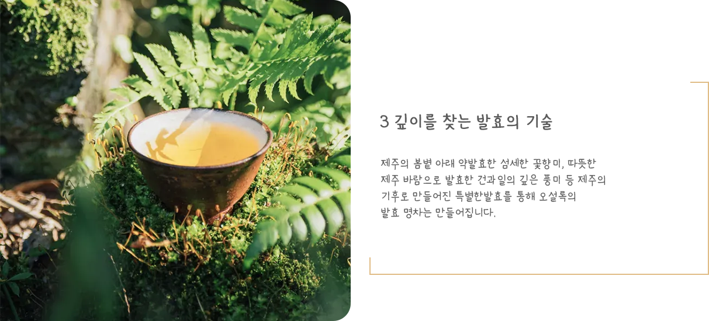
3 깊이를 찾는 발효의 기술
제주의 봄볕 아래 약발효한 섬세한 꽃향미, 따뜻한 제주 바람으로 발효한 건과일의 깊은 풍미 등 제주의 기후로 만들어진 특별한발효를 통해 오설록의 발효 명차는 만들어집니다.
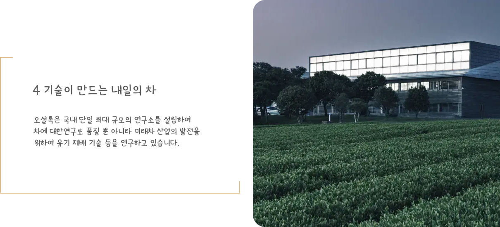
4 기술이 만드는 내일의 차
오설록은 국내 단일 최대 규모의 연구소를 설립하여 차에 대한연구로 품질 뿐 아니라 미래차 산업의 발전을 위하여 유기 재배 기술 등을연구하고 있습니다.
오설록의 발자취
제주와 함께한 오설록의 시간은 지금도 계속됩니다.
-
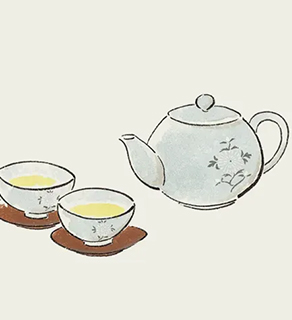
1980년
설록차 브랜드 발매 첫번째 녹차 만수, 천수, 백수 출시
-
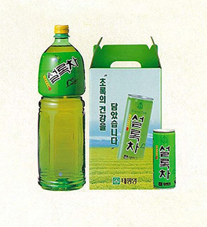
1993년
고급 잎녹차를 우려낸 한국 최초 캔녹차 출시
-
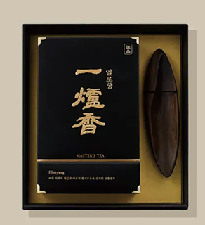
1999년
설록명차 일로향 출시
-
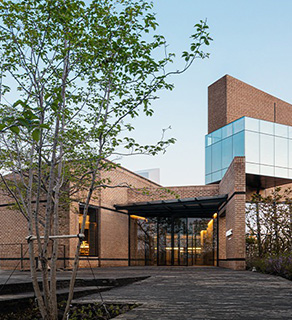
2001년
제주 오설록 티 뮤지엄 개관
-
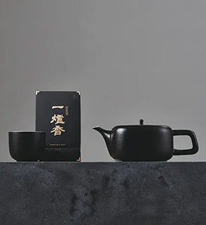
2009년
일로향 "북아메리카 티 챔피언십"덖음차부분 1위 세작, 일본 스지오카 세계 녹차 콘테스트 금상
-
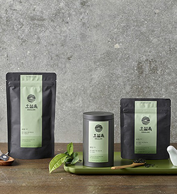
2020년
독일 IF디자인 어워드 패키지부분 수상(순수차)
오설록의 일상
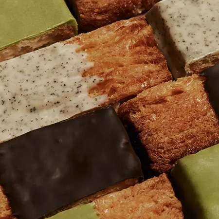
-
사람, 차를 만나다
차를 마시는 것은 일상의 쉽을 가지며,
나를 이끌어내고 세상을 따듯하게
바라보는 것에 관한 일입니다. 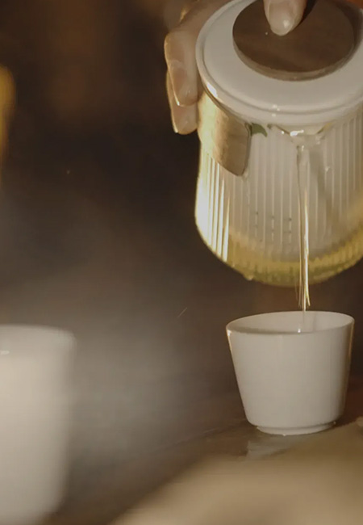
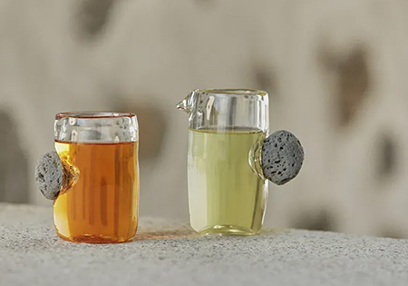
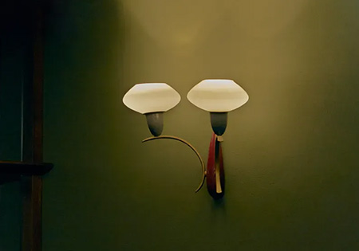
-
차로 더 깊어지는 이야기
차, 제주 사람 그리고 일상 쉼을 가지며
차와 함께 삶의 여백을 만들어 갈
오설록의 다양한 이야기를 만나보세요. 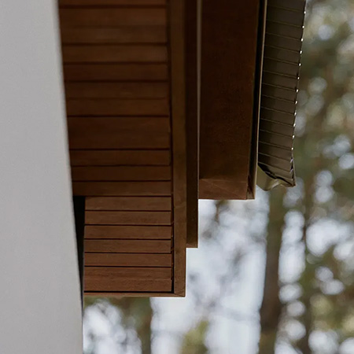
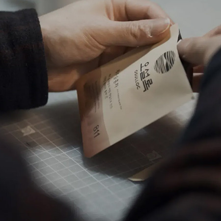